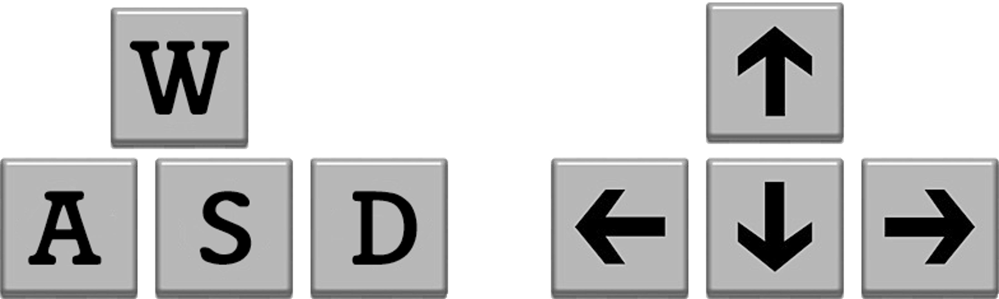

鍵盤方向鍵操控移動
鍵盤方向鍵操控移動

- 遊戲中最常使用鍵盤方向鍵來操控角色移動。每按下一次鍵盤上的指定鍵，角色就會依指定方向及指定步距...來移動一次。而許多射擊遊戲會以「WASD」按鍵來代替方向鍵，「W」對應「上」、「A」對應「左」、「S」對應「下」、「D」對應「右」。
- 方向鍵上下左右分別指向0°、180°、-90°及90°。
- 以【按下鍵盤方向鍵】事件啟動「移動」。

- 與【按下鍵盤方向鍵】有關的積木有二個，分別是
當[空白 v]鍵被按下及<(空白 v)鍵被按下？>，前者是帽子積木，得置於腳本最上方，是啟動積木；後者是布林值積木，須嵌入〖選擇積木〗中使用。 - 「移動」部份，可用
移動()點或x 改變()、y 改變()來處理，前者要先給定方向，後二者以正、負值來判定方向。


 ＸＹ法
ＸＹ法
這是最簡單的方式，是以當[空白 v]鍵被按下來啟動事件，串接x 改變()或y 改變()來實現。
當 [向右 v] 鍵被按下 x 改變(10) 當 [向左 v] 鍵被按下 x 改變(-10) 當 [向上 v] 鍵被按下 y 改變(10) 當 [向下 v] 鍵被按下 y 改變(-10)
💥當按下方向鍵後，角色就會朝指定方向移動，但角色面朝角度是沒有改變的，也就是角色並沒有轉向。
💥這種方式有一個限制，當要以按住按鍵不放開來使角色進行連續移動時，一開始會有約0.5的停頓。
 步進法
步進法
這也是以事件啟動的方式。以這種腳本來執行時，角色會同時改變面朝角度。
當 [向右 v] 鍵被按下
面朝(90)度
移動(10)點
當 [向左 v] 鍵被按下
面朝(-90)度
移動(10)點
當 [向上 v] 鍵被按下
面朝(0)度
移動(10)點
當 [向下 v] 鍵被按下
面朝(180)度
移動(10)點
💥移動()點會受角色的面朝角度影響而改變其移動的方向。
💥這種方式有一個限制，當要以按住按鍵不放開來使角色進行連續移動時，一開始會有約0.5的停頓。
 循環ＸＹ法
循環ＸＹ法
這是將上述以事件啟動的ＸＹ法改成重複偵測的條件判斷方式，可使連續移動無停頓。
當 @greenflag 被點擊
重複無限次
如果< (向右 v)鍵被按下？>那麼
x 改變(10)
end
如果< (向左 v)鍵被按下？>那麼
x 改變(-10)
end
如果< (向上 v)鍵被按下？>那麼
y 改變(10)
end
如果< (向下 v)鍵被按下？>那麼
y 改變(-10)
end
end
💥這種方式也允許角色對角線移動，因為重複無限次的偵測是同時對所有按鍵進行的。
 循環步進法
循環步進法
這是將上述以事件啟動的步進法改成重複偵測的條件判斷方式，可使連續移動無停頓。
當 @greenflag 被點擊
重複無限次
如果< (向右 v)鍵被按下？>那麼
面朝(90)度
移動(10)點
end
如果< (向左 v)鍵被按下？>那麼
面朝(-90)度
移動(10)點
end
如果< (向上 v)鍵被按下？>那麼
面朝(0)度
移動(10)點
end
如果< (向下 v)鍵被按下？>那麼
面朝(180)度
移動(10)點
end
end
速度法(變數)-進階
這是一種能使角色移動得更流暢的方法，需要二個變數來賦值，分別是用來表示 x速度的 xv 和 y速度的 yv。
當@greenflag被點擊
變數[xv v]設為(0)
變數[yv v]設為(0)
重複無限次
如果< (向右 v)鍵被按下？>那麼
變數[xv v]改變(1)
end
如果< (向左 v)鍵被按下？>那麼
變數[xv v]改變(-1)
end
如果< (向上 v)鍵被按下？>那麼
變數[yv v]改變(1)
end
如果< (向下 v)鍵被按下？>那麼
變數[yv v]改變(-1)
end
變數[xv v]設為((xv)*(0.9))//滑動慢慢停止
變數[yv v]設為((yv)*(0.9))//滑動慢慢停止
x 改變(xv)
y 改變(yv)
end